# create a fictional binary for whether someone was "in the training program"
# using # of trainings attended so some basis in real dynamics betweeen variables
df = df %>%
mutate(training_participant =
if_else(TrainingTimesLastYear < 4,0,1))
# update to simiulate invitation to only R&D dept and job levels 1-3
df = df %>%
mutate(training_participant =
if_else(JobLevel %in% c(1,2,3), training_participant, 0)) %>%
mutate(training_participant =
if_else(Department %in% c("Research & Development"), training_participant, 0)) Program Evaluation without Randomization (with Matching)
One objective of people analytics is to evaluate the effectiveness of people programs using data. An issue that makes this task less straightforward is that the best way to evaluate programs is through randomized controlled experiment, something that is often not possible because you were brought in long after the program started or because of ethical or legal considerations.
The reason randomization is key is because it gives you the best chance at ensuring causation, meaning the differences in outcomes you observe is due to the program and not something else. In this type of experiment you randomly assign some employees to participate in the program and some to participate in a control group. Randomness ensures there are no differences between groups that could be accounting for the difference in outcomes, the differences must be caused by participation in the program.
Matching is one of a handful of quasi-experimental techniques that try to approach that gold standard of randomized experiment. It does so by attempting to eliminate any differences between your participant population and your control group, by matching along a set of characteristics that could play a role in your outcome and/or whether you made it in the program group. In other words, matching is the process of carefully creating an artificial control group that looks like one that could have been made organically using randomization.
Enough hypetheticals, lets talk about our example case…
Use Case: Training Program Participation’s Effect on Performance Ratings
We are going to evaluate whether participating in an employee training effects the performance rating the employee later receives. This data is not real, but the relationships should hopefully simulate real ones.
In our example, let’s pretend that employees in certain departments and job levels were invited to participate in a training program. Employees then opted into the program or not. Invitation and then accepting the invitation are the two non-random decisions which our matching will attempt to some extent resolve.
To similuate this I’ll use the IBM attrition dataset because it has many employee characteristics with natural relationships between them, including a training count variable and a performance rating one. For our purposes let’s say if you took more than 4 trainings last year you are a training program participant. Then we will simulate the invitation being targeted to early-career, R&D employees by setting levels higher than 3 and departments not called R&D to ‘non-participant’ status.
So what dimensions effect our outcome (performance) and/or whether someone was invited and accepted the invite for the program? Here we are somewhat limited in our data, but a few candidates immediately jump out. Department and job level were the initial invitation filters so those make sense to include. Age and gender are sometimes correlated with decisions at work. Education level, job involvement, total working years, and years in current role all are certain to play a role in job performance. Together those factors should help us match a statsitcailly similar group to our participant group in a way that approaches (although still inferior to) how randomization would.
# what characterisitcs are important to perf which we'd hope our treatment vs control group are similar on?
colnames(df) [1] "Age" "Attrition"
[3] "BusinessTravel" "DailyRate"
[5] "Department" "DistanceFromHome"
[7] "Education" "EducationField"
[9] "EmployeeCount" "EmployeeNumber"
[11] "EnvironmentSatisfaction" "Gender"
[13] "HourlyRate" "JobInvolvement"
[15] "JobLevel" "JobRole"
[17] "JobSatisfaction" "MaritalStatus"
[19] "MonthlyIncome" "MonthlyRate"
[21] "NumCompaniesWorked" "Over18"
[23] "OverTime" "PercentSalaryHike"
[25] "PerformanceRating" "RelationshipSatisfaction"
[27] "StandardHours" "StockOptionLevel"
[29] "TotalWorkingYears" "TrainingTimesLastYear"
[31] "WorkLifeBalance" "YearsAtCompany"
[33] "YearsInCurrentRole" "YearsSinceLastPromotion"
[35] "YearsWithCurrManager" "training_participant" Explore Participant vs Non-Participant Differences
Most of our dataset are non-participants and participants have a slightly lower average performance rating compared to non-participants. Participation could still very well increase performance ratings if our participant group over-indexes on characteristics that have naturally lower performance ratings to start with. Matching will help tease that out.
# view baseline differences in perf between participants vs non-participants
df %>%
group_by(training_participant) %>%
summarize(count = n(),
avg_perf = round(mean(PerformanceRating),2))# A tibble: 2 × 3
training_participant count avg_perf
<dbl> <int> <dbl>
1 0 1285 3.16
2 1 185 3.12Looking at characteristics that are year counts first, we see that participants are younger, and less experienced overall, and less experienced in their current roles.
df %>%
group_by(training_participant) %>%
summarize(across(c(Age,TotalWorkingYears,YearsInCurrentRole),
mean)) %>%
pivot_longer(-training_participant) %>%
mutate(training_participant = factor(if_else(training_participant == 1, 'Yes','No'))) %>%
ggplot(aes(x = value, y = name, fill = training_participant)) +
geom_bar(stat = 'identity', position = 'dodge') +
ggtitle('Participant vs Non-Participant Differences (year counts)')+
xlab('Avg Years') +
ylab('Variable')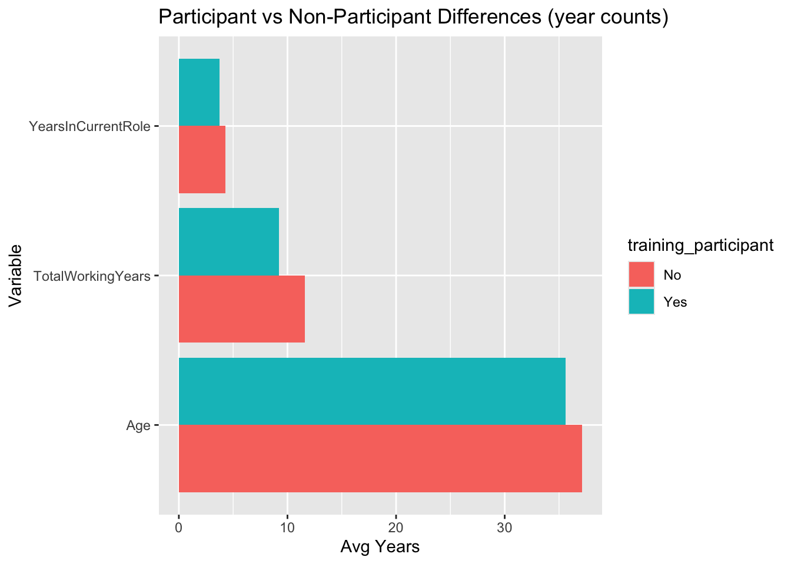
On characteristics representing ordinal scales we see that participants are lower in job level (which we knew from who got invited in the first place), slighly lower in job involvement, and slightly higher education level (could have to do with R&D department being more educated) than non-participants.
df %>%
group_by(training_participant) %>%
summarize(across(c(Education, JobLevel, JobInvolvement),
mean)) %>%
pivot_longer(-training_participant) %>%
mutate(training_participant = factor(if_else(training_participant == 1, 'Yes','No'))) %>%
ggplot(aes(x = value, y = name, fill = training_participant)) +
geom_bar(stat = 'identity', position = 'dodge') +
ggtitle('Participant vs Non-Participant Differences (scale vars)')+
xlab('Avg Value') +
ylab('Variable')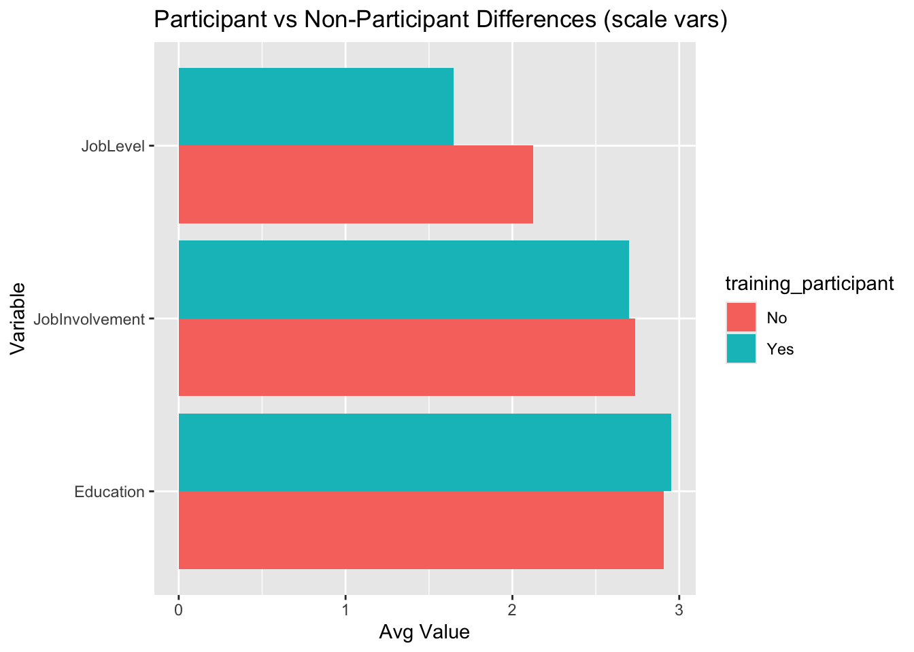
Lastly, participants had a higher female representation percentage relative to non-partipipants, which could be related to the job levels and departments, but could also represent a difference in the level to which men and women opted into an optional training program.
df %>%
count(training_participant, Gender) %>%
group_by(training_participant) %>%
mutate(pct = n/sum(n)) %>%
mutate(training_participant = factor(if_else(training_participant == 1, 'Yes','No'))) %>%
ggplot(aes(x = pct, y = Gender, fill = training_participant)) +
geom_bar(stat = 'identity', position = 'dodge')+
ggtitle('Participant vs Non-Participant Differences (gender)')+
xlab('Porportion of Subjects') 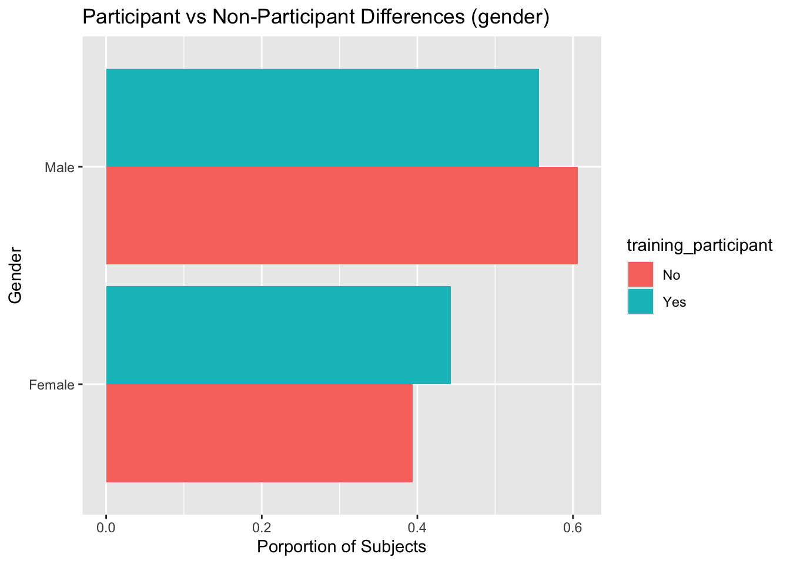
So there are definite differences between our participant group and our non-participant group and those differences could confound our analysis. Matching can help eliminate these differences and by extension potential confounds.
Matching Types
Exact Matching
just like is sounds exact matching attempts to match each participant observation with one or more non-participant observations, based on the variables you specify. This is the most effective matching type at balancing your participant and non-participant groups along the dimensions you choose, howerever, it is not always practical. It only works when there are few variables and when those variables are categorical variables with few levels. As you can imagine the more variables you are matching on the more difficult it will be to find matches. The same is true with numeric variables and categorical variables with many levels.
When we attempt exact matching with the variables we chose ealier, we lose all but 5 (unmatched, treated in below table) of the participant observations, as it has trouble finding matches with that many variables and with some of them being numeric.
# set category variables to factor type
cat_cols = c('Department', 'Gender', 'JobLevel')
df2 = df %>% mutate(across(cat_cols, as.factor))
# use matchit() to match each participant to 1 unique nonparticipant using:
# age, gender, department, education level, job level, engagement,
# total years of experience, and years in their current role
## try exact matching
match_obj <- matchit(training_participant ~ Age + Gender + Education + Department + JobLevel +
JobInvolvement + TotalWorkingYears + YearsInCurrentRole,
data = df2,
method = "exact")
## lost almost all the participant observations
summary(match_obj)$nn Control Treated
All (ESS) 1285.000000 185
All 1285.000000 185
Matched (ESS) 5.555556 5
Matched 6.000000 5
Unmatched 1279.000000 180
Discarded 0.000000 0Coarsened Exact Matching (CEM)
You might already be thinking it, a solution to having too many things to match on is to match on fewer things by creating similar groups. Coarsened exact matching does exactly that by binning continuous variables, making them categorical, before matching. Using the default parameters, we improve from 5 participants finding matches to 34 using CEM.
## try coarsened exact matching
match_obj <- matchit(training_participant ~ Age + Gender + Education + Department + JobLevel +
JobInvolvement + TotalWorkingYears + YearsInCurrentRole,
data = df2,
method = "cem")
## still losing most of the participant observations
summary(match_obj)$nn Control Treated
All (ESS) 1285.00000 185
All 1285.00000 185
Matched (ESS) 34.19155 34
Matched 45.00000 34
Unmatched 1240.00000 151
Discarded 0.00000 0The matchit package allows you to specify for each continuous variable how many bins you want to coarsen into. This can help you get fuzzier matches with fewer observations lost to not getting a match or clearer matches with more observations lost, depending on what you are trying to do. Here we specify the number of bins for each continuous variable and only lose 8 participant observations due to not finding a match, a huge improvement over our default CEM model.
## try tuning the binning
match_obj <- matchit(training_participant ~ Age + Gender + Education + Department + JobLevel +
JobInvolvement + TotalWorkingYears + YearsInCurrentRole,
data = df2,
method = "cem",
cutpoints = c(Age = 5,
Education = 5,
JobInvolvement = 5,
TotalWorkingYears = 3,
YearsInCurrentRole = 3))
## only lost 8 participant observations this time
summary(match_obj)$nn Control Treated
All (ESS) 1285.000 185
All 1285.000 185
Matched (ESS) 414.697 177
Matched 551.000 177
Unmatched 734.000 8
Discarded 0.000 0Now that we have a matching model that is actually finding matches, let’s look at how well its matches balance. The way to assess matches is by comparing mean differences between our participants (treatment) and non-participants (control) groups across the variables we chose. The below table shows mean age for participants was 35.61 years old and for non-participants was 37.11 years old. The mean difference after standardizing (to pull all variables on the same scale) is -.16. We’d like that number to be as close to 0 as possible after matching.
round(summary(match_obj)$sum.all, 2)[,1:3] Means Treated Means Control Std. Mean Diff.
Age 35.61 37.11 -0.16
GenderFemale 0.44 0.39 0.10
GenderMale 0.56 0.61 -0.10
Education 2.95 2.91 0.04
DepartmentHuman Resources 0.00 0.05 -0.24
DepartmentResearch & Development 1.00 0.60 5542818.07
DepartmentSales 0.00 0.35 -0.78
JobLevel1 0.53 0.35 0.37
JobLevel2 0.29 0.37 -0.18
JobLevel3 0.18 0.14 0.09
JobLevel4 0.00 0.08 -0.32
JobLevel5 0.00 0.05 -0.25
JobInvolvement 2.70 2.73 -0.05
TotalWorkingYears 9.21 11.58 -0.40
YearsInCurrentRole 3.74 4.30 -0.17This table shows the same data after our CES matching model (with bin numbers specified for continuous variables). Standardized mean differences are 0 or approaching 0 for each variable we chose to balance across.
round(summary(match_obj)$sum.match, 2)[,1:3] Means Treated Means Control Std. Mean Diff.
Age 35.55 35.72 -0.02
GenderFemale 0.44 0.44 0.00
GenderMale 0.56 0.56 0.00
Education 2.91 2.89 0.02
DepartmentHuman Resources 0.00 0.00 0.00
DepartmentResearch & Development 1.00 1.00 0.00
DepartmentSales 0.00 0.00 0.00
JobLevel1 0.54 0.54 0.00
JobLevel2 0.28 0.28 0.00
JobLevel3 0.18 0.18 0.00
JobLevel4 0.00 0.00 0.00
JobLevel5 0.00 0.00 0.00
JobInvolvement 2.71 2.76 -0.06
TotalWorkingYears 9.21 9.64 -0.07
YearsInCurrentRole 3.79 3.96 -0.05This visual shows those standardized mean differences before and after matching (with department removed as it’s pre matching mean difference was an outlier for this graph). This matching model balanced really well across most variables.
smd_plot(summary(match_obj))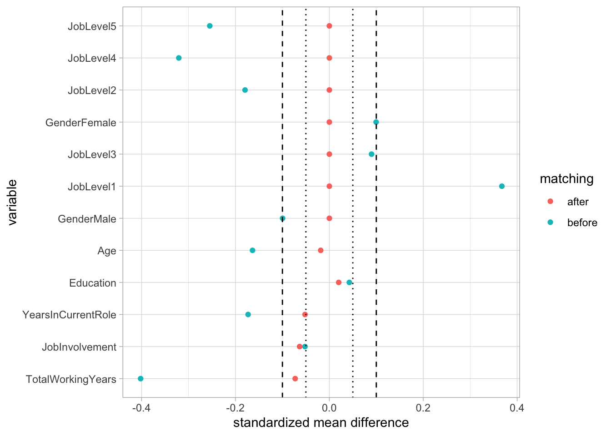
Propensity Score Matching
Another type of matching that is more practical when you have many variables and many continuous variables is propensity score matching. This involves estimating a logistic regression (or similar model) to predict the likelihood of being a participant (propensity of being treated), given a set of predictor variables. Once non-participants have been scored with a likelihood of being a participant, given their characteristics, they are then matched with a participant with a similar likelihood score.
A basic propensity score model finds a match for every participant.
## try propensity score matching
match_obj <- matchit(training_participant ~ Age + Gender + Education + Department +
JobLevel + JobInvolvement + TotalWorkingYears + YearsInCurrentRole,
data = df2,
method = 'nearest'
)
# no lost particepant observations
summary(match_obj)$nn Control Treated
All (ESS) 1285 185
All 1285 185
Matched (ESS) 185 185
Matched 185 185
Unmatched 1100 0
Discarded 0 0The propensity score model does a decent job of providing quality matches, but is inferior to our tuned CEM model from before.
# check out qulaity of matches
smd_plot(summary(match_obj))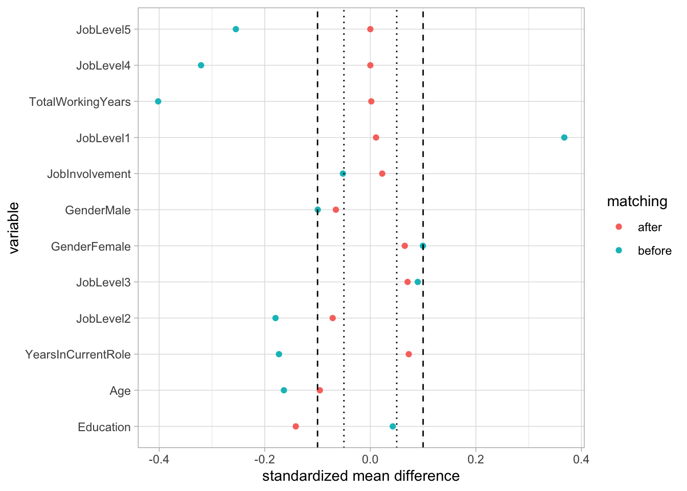
Exact + Propensity Score
It’s possible to combine exact matching with propensity score matching and this can give us some of the benefits of both. The way it works is it matches exactly on a subset of variables you specify (categorical variables with few levels) then it uses the propensity score to match when exact matching doesn’t yield any matches or to narrow down many matches to the best match when exact matching results in many matches for a given participant.
Here we match exactly on gender, education level, job level, and department, then use the full variable set for creating propensity scores, which further aid in finding matches. This model also retains every participant observation. This model improves on the baseline propensity score model and performs similarly to the tuned CES model.
# try parial exact with propensity score
match_obj <- matchit(training_participant ~ Age + Gender + Education + Department +
JobLevel + JobInvolvement + TotalWorkingYears + YearsInCurrentRole,
data = df2,
exact = ~ Gender + Education + JobLevel+ Department,
method = 'nearest'
)
# check out qulaity of matches
smd_plot(summary(match_obj))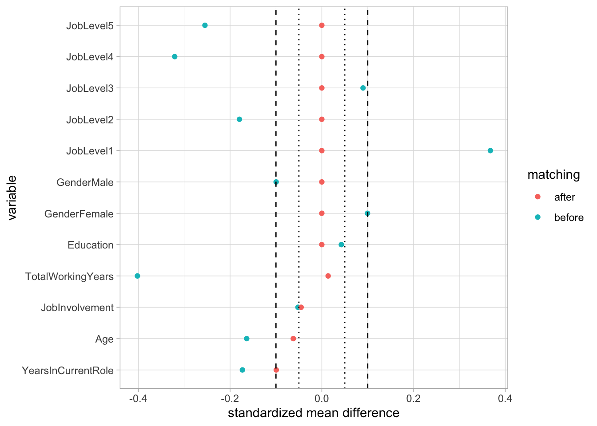
Ultimately, you can iterate to your heart’s content. There are other even more complex methods that I won’t get into here that might be able to squeeze more juice from the apple. Here is the best I got from a small amount of playing around (probit instead of logit link function, optimal instead of nearest as the method for matching propensity scores), ultimately just another version of exact plus propensity score matching that slightly improve on my coarsened exact matching.
## try one more with optimal matching instead of greedy (nearest), probit instead of logit
match_obj <- matchit(training_participant ~ Age + Gender + Education + Department +
JobLevel + JobInvolvement + TotalWorkingYears + YearsInCurrentRole,
data = df2,
exact = ~ Gender + Education + JobLevel + Department,
method = 'optimal',
link = 'probit'
)
# check out qulaity of matches
smd_plot(summary(match_obj))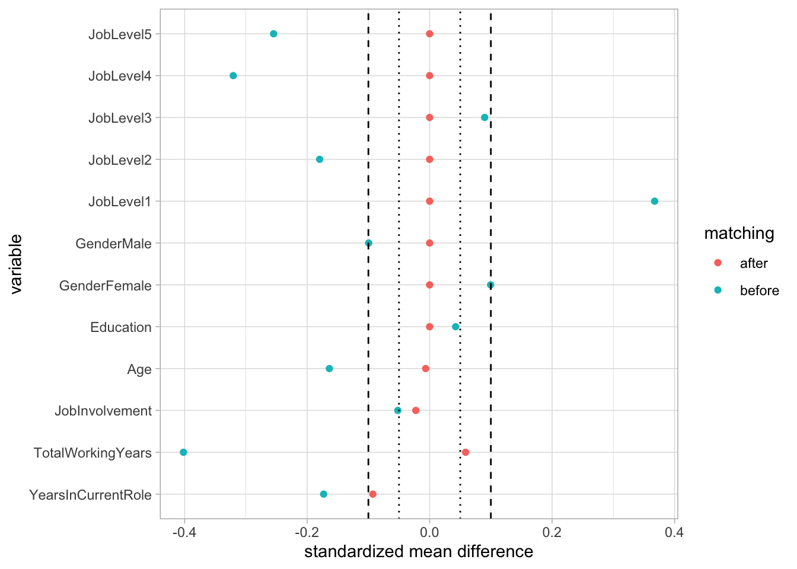
Here are a few more plots to understand our matching model. The first shows the propensity score overlaps between participants, matched non-participants, and non-matched non-participants. The rest showing how matching minimizes the distance between participant and non-participant lines/distributions along our variables.
# propensity overlaps look great
plot(match_obj, type = "jitter", interactive = FALSE)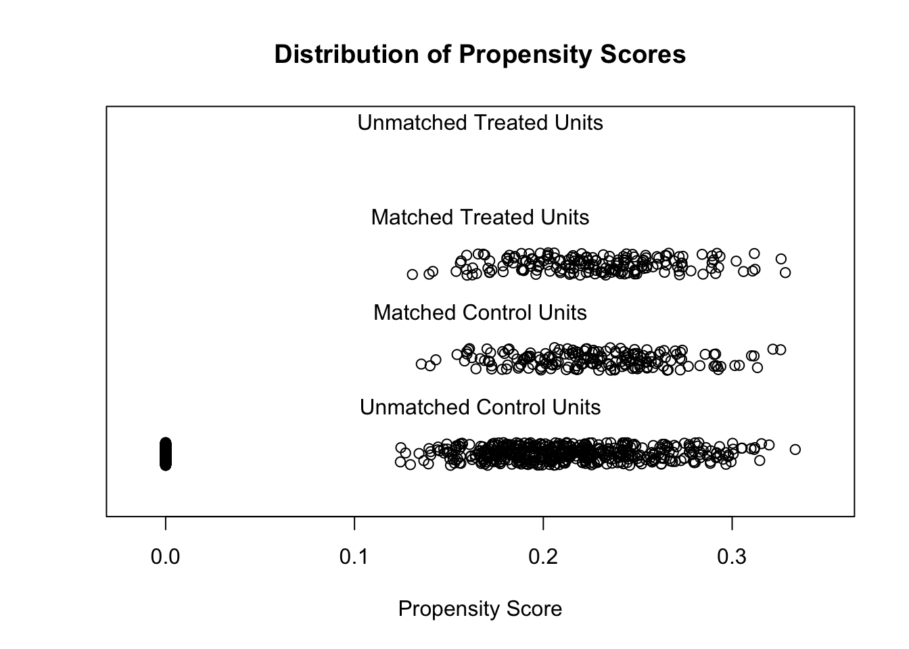
# look at density plots along matching criteria of participants vs non after matching
plot(match_obj, type = "density", interactive = FALSE,
which.xs = ~ Age + Gender + Department)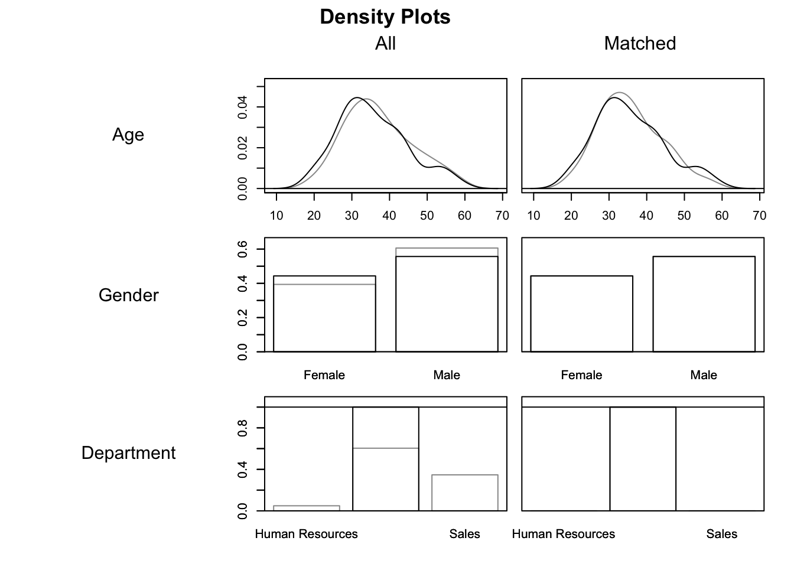
plot(match_obj, type = "density", interactive = FALSE,
which.xs = ~ Education + JobLevel)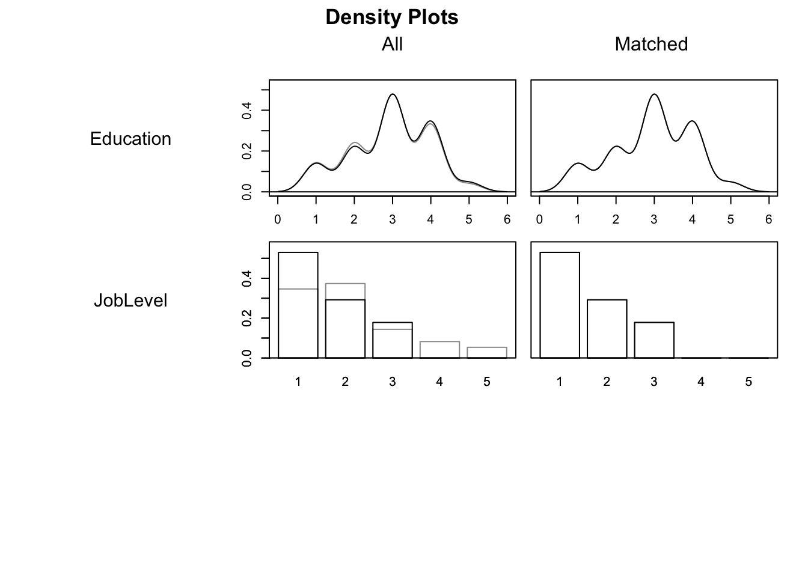
plot(match_obj, type = "density", interactive = FALSE,
which.xs = ~ JobInvolvement + TotalWorkingYears + YearsInCurrentRole)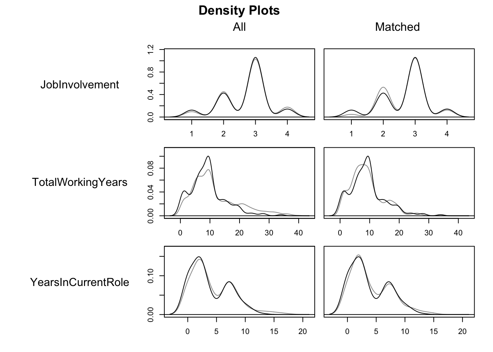
Estimating Effects
Now we have matches that we feel comfortable with, we can compare our similar in every observable way participant and non-participant groups on performance ratings to estimate the effect of participation on performance.
We use a linear regression to add any remaining robustness needed in controlling for differences in covariates, ultimately looking for the marginal effect of participation in training on mean performance rating, which we estimate to be a decrease in performance rating of .0402, which, at a pvalue of .253, means we don’t have much confidence that the true effect of training participation on performance rating is not actually zero. Said differently, this test cannot reject our null assumption that participating in the training doesn’t effect performance ratings.
# get matches
df_match = match.data(match_obj)
# fit a linear model explaining performance with participation and covariates for robustness
fit = lm(PerformanceRating ~ training_participant + Age + Gender + Education +
JobLevel + JobInvolvement + TotalWorkingYears + YearsInCurrentRole,
data = df_match)
# get marginal effect of participation on performance rating
avg_comparisons(fit, variables = "training_participant",
vcov = ~subclass,
newdata = subset(df_match, training_participant == 1))
Term Contrast Estimate Std. Error z Pr(>|z|) S
training_participant mean(1) - mean(0) -0.0402 0.0359 -1.12 0.263 1.9
2.5 % 97.5 %
-0.111 0.0302
Columns: term, contrast, estimate, std.error, statistic, p.value, s.value, conf.low, conf.high, predicted_lo, predicted_hi, predicted
Type: response Takeaways and Limitations
While matching does get you closer to a causal relationship, it doesn’t provide the same amount of statistical power to rule out alternative explanations that a true randomized experiment would. This is because randomization on a sufficiently large sample implies that all factors are more or less equal in treatment and control groups, not just the observable factors, which are the only factors we can safely balance across treatment and control groups with matching. The possibility of an unobserved confounding variable still remains a threat to causal claims even after matching well on all the things we can measure, so causal claims obtained by matching should be made more cautiously than ones made with random assignment. That being said, where random assignment is not possible, practical, ethical, or legal, matching is a great alternative for providing a level of confidence about causation in the evaluation of the effectiveness of your programs.